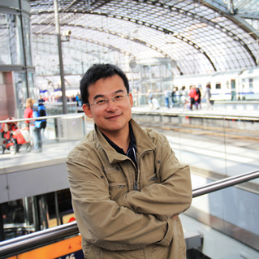
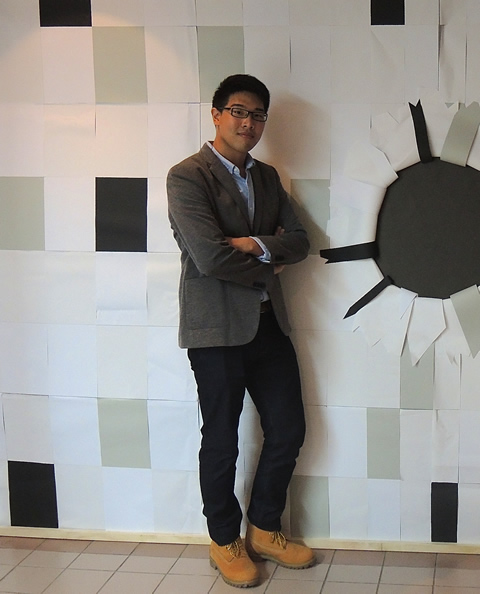

| 繁體中文 | English |
歷屆畢業生
職別 國立高雄大學 應用物理學系 教授
姓名 謝振豪
學經歷
東北大學 日本 理學研究所物理學 博士
國立交通大學電子物理系 (博士後研究員）
理化學研究所
RIKEN Photodynamics Research Center (Assist. Research Fellow)Email chchia@nuk.edu.tw
聯絡方式 07-5919713
學術專長 半導體物理實驗
研究主題 Excitonic properties of ZnO-based semiconductor compounds
已發表論文 期刊論文39篇

職別 大同大學 電機工程學系 副教授
姓名 楊祝壽 (Yang, Chu-Shou)
學經歷 交大電子物理
Email csyang@ttu.edu.tw
學術專長 半導體光電材料分析 自聚性量子點製作與特性分析
職別 中原大學 物理學系 副教授
姓名 院繼祖
學經歷 交大電子物理
Email chitsuyuan@gmail.com
學術專長 奈米光學
職別 台積電 主任工程師
姓名 賴怡仁
學經歷
交通大學 電子物理所 博士
中原大學 應用物理所 碩士
Email yjlaie@tsmc.com
聯絡方式 0988-937570
學術專長
半導體物理磊晶、半導體物理光學、半導體量子點材料特性、覆晶封裝產品可靠度、無鉛凸塊材料特性
研究主題 CdSe Quantum Dots
已發表論文 期刊論文2篇

職別 博士 台積電工程師
姓名 辜瑞泰
學經歷 交大電子物理博士
Email Jimmyku.ep94g@nctu.edu.tw
學術專長 MBE, PL
研究主題 III-nitride semiconductor growth
已發表論文 期刊論文3篇

職別 東海大學助理教授
姓名 李寧
學經歷
國立交通大學電子物理系博士
國立交通大學電子物理系博士後研究員 2011.08-
國立交通大學貴重儀器中心博士後研究員 2009.08-2011.07
國立交通大學電子物理系博士後研究員 2008.09-2009.08
Email wurtzite@xuite.net
學術專長
陰極螢光光譜分析、有機金屬氣相磊晶、掃描式探針顯微術、半導體電性分析
研究主題
半導體奈米結構之陰極螢光光譜分析、化合物半導體磊晶
已發表論文
姓名 范文忠
學經歷
中原大學物理系學士
中原大學應用物理系碩士
交通大學電子物理系博士
國立交通大學電子物理系博士後研究員
Email Wcfan49@gmail.com
學術專長
分子束磊晶與光頻譜技術
研究主題
第二型能帶結構碲化猛鋅/硒化鋅量子點之成長與光學特性量測
已發表論文

職別 博士
姓名 簡崑峰
學經歷 彰化師大光電所碩士 交大電物所博士
Email Koofoo.ep96g@nctu.edu.tw
學術專長 分子束磊晶,光譜量測
研究主題
ZnO,ZnMgO,ZnCdO,ZnMnO相關薄膜與量子井結構成長及光特性研究
職別 博士
姓名 盧英睿
學經歷 東華大學 應用物理所碩士
任職 國家同步輻射研究中心
Email Porsche911959@hotmail.com
聯絡方式 03-5780281 #3379
學術專長 加速器光源應用
研究主題 X光光譜對奈米再生能源材料之研究
已發表論文
職別 博士
姓名 蔣慶有
學經歷 國家同步輻射研究中心 (正職)
Email CYChiang12@gmail.com
聯絡方式 03-5780281 #6415
學術專長 X-ray absorption spectroscopy, X-ray photoemission spectroscopy
學術專 長X-ray scattering
研究主題 LiFePO4 cathode material, CIGS solar cell, ZnO thin film
已發表論文
職別 博士
姓名 劉冠顯
學經歷
國立交通大學電子物理學系博士班
友達光電
Email Kim-liau@hotmail.com
聯絡方式 0937025611
學術專長 半導體物理與元件
研究主題 前瞻銦鎵鋅氧薄膜電晶體之電性可靠度分析與物理機制研究
職別 博士後研究員
姓名 林彥丞
學經歷
交通大學電子物理系博士 2004.09 ~ 2009.01
交通大學電子物理系博士後研究員 2009.02 ~
穩懋半導體
yenblin@hotmail.com
bryanlin@mail.nctu.edu.tw
學術專長
半導體物理、半導體光頻譜、固態物理
研究主題
二六族化合物半導體、半導體奈米結構量子點
已發表論文
職別 博士
姓名 楊崇巽
學經歷 國立中山大學物理學系
任職 台積電
Email: a6982911@gmail.com
職別 碩士
姓名 江偉仕
Email 9312156@cycu.org.tw
職別 碩士
姓名 許維綸
學經歷 高雄大學應用物理系 交通大學電子物理所
Email ross6320@gmail.com
學術專長 分子束磊晶與光頻譜技術
研究主題 Growth and optical study of ZnCdO
職別 碩士
姓名 葉蓉霏
學經歷 國立嘉義大學 應用物理學系
Email rongfei.ep99g@nctu.edu.tw
學術專長 分子束磊晶與光頻譜技術
職別 碩士
姓名 楊侑霖
學經歷 成大物理 交大電物
Email yang770509@hotmail.com
學術專長 分子束磊晶與光頻譜技術
研究主題 Growth and optical study of ZnMnO epilayer

職別 碩士
姓名 楊嘉華
學經歷 國立中興大學物理系 交大電物所碩士
Email Jessica.ep00g@nctu.edu.tw
學術專長 光激螢光光譜量測﹑分子束磊晶技術
研究主題 二六族半導體MBE磊晶
職別 碩士
姓名 蔡明叡
學經歷 國立高雄大學應用物理學系 交大電物所碩士
Email Bumlshe@yahoo.com.tw
學術專長 等電性半導體光電特性研究
職別 碩士
姓名 陳宣劭
學經歷 國立交通大學電子物理系 交大電物所碩士
Email jerry78424.ep96@g2.nctu.edu.tw
學術專長 分子束磊晶與光頻譜技術
職別 碩士
姓名 賴湘穎
學經歷 彰化師範大學物理系 交大電物所碩士
Email t49_tina@hotmail.com
學術專長 分子束磊晶與光頻譜技術
職別 碩士
姓名 李國豪
學經歷 國立中正大學物理學系 交大電物所碩士
Email einstein.24@hotmail.com
學術專長 分子束磊晶與光頻譜技術
職別 碩士
姓名 鄒明浩
學經歷 國立臺灣師範大學物理系 交大電物所碩士
Email zyumiia@hotmail.com
學術專長 分子束磊晶與光頻譜技術
職別 碩士
姓名 黃詩涵
學經歷 國立高雄大學應用物理學系 交大電物所碩士
Email forget352003@hotmail.com
學術專長 分子束磊晶與光頻譜技術
職別 碩士
姓名 戴悅如
學經歷 國立嘉義大學電子物理系 交大電物所碩士
Email silencedaidai@gmail.com
學術專長 分子束磊晶與光頻譜技術
職別 碩士
姓名 李建德
學經歷 國立高雄大學應用物理學系 交大電物所碩士
Email d155131@gmail.com
學術專長 分子束磊晶與光頻譜技術
職別 碩士
姓名 許信華
學經歷 國立高雄大學應用物理學系 交大電物所碩士
Email s19891223@gmail.com
學術專長 加速器光源應用
研究主題 VO2 by sol-gel method
職別 碩士
姓名 林峰慶
學經歷 中原大學物理系 交大電物所碩士
Email Kobe81242008@hotmail.com
聯絡方式 0980113326
職別 碩士
姓名 羅昱隆
學經歷 國立交通大學電子物理系 國立交通大學電子物理所
Email yulonglo0201@gmail.com
職別 碩士
姓名 莊智森
學經歷 國立交通大學應用數學系 國立交通大學電子物理所
Email Mar771017@yahoo.com.tw
職別 碩士
姓名 陳威凱
學經歷 國立中山大學物理學系 國立交通大學電子物理所
Email w16151001@gmail.com
職別 碩士
姓名 陳育鋒
學經歷 國立中山大學物理學系 國立交通大學電子物理所
Email hardmore0922@gmail.com
職別 碩士
姓名 周正華
學經歷 國立嘉義大學電子物理學系 國立交通大學電子物理所
Email raymond810504@hotmail.com

職別 碩士
姓名 高浩康
學經歷 國立交通大學電子物理學系 國立交通大學電子物理所
Email csgogoio36@gmail.com
職別 碩士
姓名 路承穎
學經歷 國立交通大學電子物理學系 國立交通大學電子物理所
Email chenyinlu.ep03g@nctu,edu.tw
職別 碩士
姓名 謝丞軒
學經歷 國立交通大學電子物理學系 國立交通大學電子物理所
Email jack0320.ep03g@g2.nctu.edu.tw
職別 碩士
姓名 劉建利
學經歷 國立中山大學物理學系 國立交通大學電子物理所
Email z75383@gmail.com
職別 碩士
姓名 王菁
學經歷 蘭州大學物理學系 國立交通大學電子物理所
Email kingwlzu@gmail.com
職別 碩士
姓名 Nguyen Duc Thien
學經歷 Hanoi National University of Education 國立交通大學電子物理所
Email ducthien_hnue@yahoo.com
職別 碩士
姓名 葛于臣
學經歷 國立交通大學電子物理學系 國立交通大學電子物理所
Email anan88116@gmail.com
職別 碩士
姓名 王翔翎
學經歷 國立交通大學電子物理學系 國立交通大學電子物理所
Email wxiangl.ep00@nctu.edu.tw
職別 碩士
姓名 王彥迪
學經歷 國立交通大學電子物理學系 國立交通大學電子物理所
Email dickson880050@gmail.com
職別 碩士
姓名 羅奕昕
學經歷 國立交通大學電子物理學系 國立交通大學電子物理所
任職 世界先進
Email robert811130.ep04g@nctu.edu.tw
職別 碩士
姓名 曾智聞
學經歷 國立中山大學物理學系 國立交通大學電子物理所
Email stu88381@gmail.com
職別 碩士
姓名 王威辰
學經歷 國立中正大學物理學系 國立交通大學電子物理所
Email kp22669@gmail.com
\
職別 碩士
姓名 洪翊庭
學經歷 國立中興大學物理學系 國立交通大學電子物理所
任職 聯電
Email sakurass012601@gmail.com
職別 碩士
姓名 張富宸
學經歷 國立中山大學物理學系 國立交通大學電子物理所
Email:fuchen0527@gmail.com
職別 碩士
姓名 張祐維
學經歷 國立交通大學電子物理學系
國立交通大學電子物理所
Email andy200438@gmail.com
職別 博士後研究員
姓名 Sa Hoang Huynh
學經歷
國立交通大學/材料科學與工程學系 博士 ( 2012-2017)
國立交通大學/材料科學與工程學系 博士後研究員 (2017-2019.02)
英國卡迪夫大學 博士後研究員(2019.03-2020.02)
hoangsa1429@gmail.com